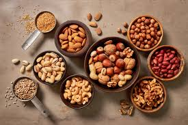
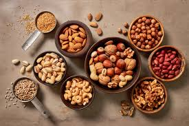
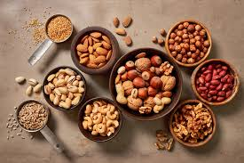

Alimente Benefice pentru Creier
Imagini relevante pentru nutriția cognitivă:
 

Nutriția cognitivă este un domeniu interdisciplinar care explorează legătura dintre alimentație și sănătatea creierului și a funcțiilor cognitive. Aceasta se concentrează pe modul în care anumite nutrienți și diete pot influența funcționarea creierului, capacitatea de gândire, memoria, concentrarea și starea de spirit.
Lista cu alimente recomandate pentru o nutriție cognitivă sănătoasă.
| Aliment | Beneficii |
|---|---|
| Pește gras (somon, sardine) | Bogat în acizi grași omega-3, benefic pentru sănătatea creierului |
| Fructe de pădure (afine, căpșuni) | Antioxidanți care protejează creierul de stres oxidativ |
| Legume cu frunze verzi (spanac, kale) | Bogate în vitamine și minerale esențiale pentru funcționarea creierului |
| Nuci și semințe | Surse de grăsimi sănătoase, proteine și vitamine B, esențiale pentru creier |
Imagini relevante pentru nutriția cognitivă:

Referințe la studii științifice care susțin beneficiile nutriției cognitive.